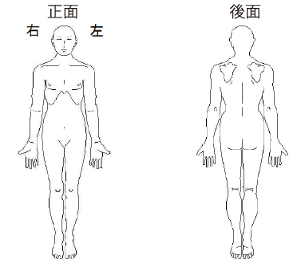

<!--
@license
Copyright (c) 2016 The Polymer Project Authors. All rights reserved.
This code may only be used under the BSD style license found at http://polymer.github.io/LICENSE.txt
The complete set of authors may be found at http://polymer.github.io/AUTHORS.txt
The complete set of contributors may be found at http://polymer.github.io/CONTRIBUTORS.txt
Code distributed by Google as part of the polymer project is also
subject to an additional IP rights grant found at http://polymer.github.io/PATENTS.txt
-->

<link rel="import" href="../bower_components/polymer/polymer-element.html">
<link rel="import" href="../bower_components/paper-input/paper-input.html">
<link rel="import" href="../bower_components/paper-input/paper-textarea.html">
<link rel="import" href="../bower_components/paper-button/paper-button.html">
<link rel="import" href="../bower_components/paper-toast/paper-toast.html">
<link rel="import" href="../bower_components/iron-collapse/iron-collapse.html">
<link rel="import" href="../bower_components/paper-dropdown-menu/paper-dropdown-menu.html">
<link rel="import" href="../bower_components/paper-item/paper-item.html">
<link rel="import" href="../bower_components/paper-spinner/paper-spinner-lite.html">
<link rel="import" href="../bower_components/paper-listbox/paper-listbox.html">
<link rel="import" href="../bower_components/polymerfire/firebase-auth.html">
<link rel="import" href="../bower_components/polymerfire/firebase-document.html">
<link rel="import" href="shared-styles.html">

<dom-module id="my-hearing">
  <template>
    <style include="shared-styles">
      :host {
        display: block;
      }

      #inspectImg{
        display:block;
        width:100%;
      }

      #inspectImgWrapper{
        position:relative;
      }

      #redDot{
        background:red;
        width:20px;
        height:20px;
        border-radius:50%;
        position:absolute;
        box-shadow: 0 0 5px red;
        opacity:0;
      }

      #form>div{
        margin:40px 0;
      }

      #form p{
        margin:0;
      }

      #submitButton{
        width:100%;
      }

      #patientPassword, #hospitalPassword, #resetPasswordNewPassword{
        margin-bottom:16px;
      }

      .openResetPassword{
        width:100%;
      }

      .openForgetPassword{
        width:100%;
        margin-top:16px;
      }

    </style>

    <firebase-auth
    id="auth"
    user="{{user}}"
    status-known="{{statusKnown}}"
    on-error="handleError">
    </firebase-auth>

    <firebase-document
      path="users/[[params]]/profile"
      data="{{hospitalData}}">
    </firebase-document>

    <firebase-document
      path="users/[[user.uid]]/profile"
      data="{{patientData}}">
    </firebase-document>

    <div class="card">

      <iron-collapse id="preloader" opened>
        <paper-spinner-lite active></paper-spinner-lite>
      </iron-collapse>

      <iron-collapse id="afterLogin">
        <iron-collapse id="loginForm">
            <p>まずは患者としてログインしてください。</p>
            <paper-input id="patientEmail" label="メールアドレス" required auto-validate></paper-input>
            <paper-input id="patientPassword" label="パスワード" minlength="6" error-message="6文字以上入力してください" type="password" required auto-validate></paper-input>
            <paper-button on-tap="loginPatient" class="mainBtn" raised>ログイン</paper-button>
            <paper-button on-tap="createPatient">新規登録</paper-button>
            <div>
              <paper-button class="openForgetPassword" on-tap="toggleForgetPassword">パスワードを忘れた</paper-button>
            </div>
        </iron-collapse>

        <iron-collapse id="forgetPassword">
          <p>パスワードリセットのためのリンクを登録されているメールアドレスに送信いたします。</p>
          <paper-input id="forgetdPasswordEmail" label="メールアドレス" required auto-validate></paper-input>
          <paper-button on-tap="forgetPassword" raised class="mainBtn">送信</paper-button>
        </iron-collapse>

        <iron-collapse id="form">
          <p>痛みや不安のあるところをタップしてください。</p>
          <div id="inspectImgWrapper">
            <div id="redDot"></div>
            
          </div>

          <div>
            <paper-dropdown-menu required auto-validate id="howLong" label="どのくらい前から痛みますか？">
              <paper-listbox slot="dropdown-content">
                <paper-item>1ヶ月以上前</paper-item>
                <paper-item>2週間前</paper-item>
                <paper-item>1週間前</paper-item>
                <paper-item>昨日</paper-item>
              </paper-listbox>
            </paper-dropdown-menu>
          </div>

          <div>
            <paper-dropdown-menu required id="happenedWhere" label="どこでそのようになりましたか？">
              <paper-listbox slot="dropdown-content">
                <paper-item>自宅</paper-item>
                <paper-item>会社</paper-item>
                <paper-item>学校</paper-item>
                <paper-item>路上</paper-item>
                <paper-item>その他</paper-item>
              </paper-listbox>
            </paper-dropdown-menu>
          </div>

          <div>
            <p>何をしてて痛くなりましたか？</p>
            <paper-textarea label="ここに入力" required auto-validate id="fromWhat"></paper-textarea>
          </div>

          <div>
            <p>今までかかった病気（手術など）はございますか？</p>
            <paper-textarea label="ここに入力" required auto-validate id="anyDisease"></paper-textarea>
          </div>

          <div>
            <p>治療によって快適な身体を手に入れた後の目標、目的を教えてください。</p>
            <paper-textarea label="ここに入力" required auto-validate id="afterHealthyBody"></paper-textarea>
          </div>

          <div>
            <p>担当施術者、術者指名が入る場合は記入してください。</p>
            <paper-input label="ここに入力" id="designatedDoctor"></paper-input>
          </div>

          <div>
            <p>当院では通院時間の取れない方、痛みが取れず困っている方、より早く痛みから逃れたい方のために、ご相談後、特別治療を導入しております。<br />通常の保険治療に比べて早く治すことが可能です。ご希望の方を選択してください。</p>
            <paper-dropdown-menu id="fastOrSlow" label="選択肢より選んでください。">
              <paper-listbox slot="dropdown-content">
                <paper-item>短い期間で痛みを早くなおしたい</paper-item>
                <paper-item>長い期間をかけてゆっくり治療をおこないたい</paper-item>
              </paper-listbox>
            </paper-dropdown-menu>
          </div>

          <div>
          <p>どちらで当院をお知りになりましたか？</p>
            <paper-dropdown-menu required id="foundOutHow" on-value-changed="additionalCheck" label="選択肢より選んでください。">
              <paper-listbox slot="dropdown-content">
                <paper-item>紹介</paper-item>
                <paper-item>近いから</paper-item>
                <paper-item>過去に受診</paper-item>
                <paper-item>エキテン</paper-item>
                <paper-item>街ネタ</paper-item>
                <paper-item>当院ブログ</paper-item>
                <paper-item>タウンページ</paper-item>
                <paper-item>店頭看板</paper-item>
                <paper-item>チラシ・小冊子</paper-item>
                <paper-item>試合会場で知った</paper-item>
                <paper-item>当院ホームページ</paper-item>
              </paper-listbox>
            </paper-dropdown-menu>
            <paper-textarea hidden="true" id="additionalFoundOutHow"></paper-textarea>
          </div>

          <div>
            <p>※女性の方のみにお聞きします。今、妊娠またはその可能性はありますか？</p>
            <paper-dropdown-menu required id="possiblyPregnant" label="選択肢より選んでください。">
              <paper-listbox slot="dropdown-content">
                <paper-item>ない</paper-item>
                <paper-item>ある</paper-item>
              </paper-listbox>
            </paper-dropdown-menu>
          </div>

          <div>
            <p>症状によっては、総合病院・専門病院への紹介を希望されますか？</p>
            <paper-dropdown-menu  required id="introduceProfessional" label="選択肢より選んでください。">
              <paper-listbox slot="dropdown-content">
                <paper-item>希望する</paper-item>
                <paper-item>希望しない</paper-item>
              </paper-listbox>
            </paper-dropdown-menu>
          </div>

          <div>
            <p>要注意事項（クレーム、刺青の有無や肢体不自由など）</p>
            <paper-textarea label="ここに入力" id="others"></paper-textarea>
          </div>

          <paper-button class="mainBtn" raised id="submitButton" on-tap="submit">提出</paper-button>

        </iron-collapse>

        <iron-collapse id="afterMessage">
          <div>
            問診票のご記入ありがとうございました。係りの者から呼ばれるまでお待ちください。
          </div>
        </iron-collapse>
      </iron-collapse>

    </div>

    <paper-toast id="toast"></paper-toast>

  </template>

  <script>
    class MyHearing extends Polymer.Element {
      static get is() { return 'my-hearing'; }

      placeRed(e){
        this.$.redDot.style.opacity = 0.7
        const offsetX = this.$.inspectImg.getBoundingClientRect().left
        const offsetY = this.$.inspectImg.getBoundingClientRect().top
        const tapX = e.pageX - offsetX - 10
        const tapY = e.pageY - offsetY - 10
        this.$.redDot.style.left = tapX + "px"
        this.$.redDot.style.top = tapY + "px"
      }

      static get properties() {
        return {
          //hospital key in this case
          params: String,
          user: {
            type: Object,
            observer: 'userChanged'
          },
          patientData: Object,
          hospitalData: Object,
          statusKnown: {
            type: Object,
            observer: 'statusKnownChanged'
          }
        }
      }

      statusKnownChanged(){
        if(this.statusKnown){
          this.$.preloader.hide()
          this.$.afterLogin.show()
        }else{
          this.$.preloader.show()
          this.$.afterLogin.hide()
        }
      }

      openToast(text){
        this.$.toast.text = text
        this.$.toast.open()
      }

      userChanged(){
        if(this.user){
          this.$.form.show()
          this.$.loginForm.hide()
        }else{
          this.$.form.hide()
          this.$.loginForm.show()
        }
      }

      forgetPassword(){
        var auth = window.firebase.auth();
        const email = this.$.forgetdPasswordEmail.value
        const that = this
        this.openToast("確認中...")
        auth.sendPasswordResetEmail(email).then(function() {
          that.openToast("パスワードリセット用のEmailが送信されました。")
        }).catch(function(error) {
          that.openToast("エラーが起きました。")
        })
      }

      _clearPassword(){
        this.$.patientPassword.value = null
      }

      loginPatient(){
        const that = this
        const email = this.$.patientEmail.value
        const password = this.$.patientPassword.value
        this.openToast("ログイン中...")
        this.$.auth.signInWithEmailAndPassword(email, password)
        .then(function(response){
          that._clearPassword()
          that.openToast("ログインしました。")
        })
        .catch(function(error){
          that.openToast("ログインに失敗しました。")
          console.log(error)
        })
      }

      createPatient(){
        const that = this
        const email = this.$.patientEmail.value
        const password = this.$.patientPassword.value
        this.openToast("ユーザーを作成中...")
        this.$.auth.createUserWithEmailAndPassword(email, password)
        .then(function(response){
          that.$.patientLogin.hide()
          that.$.hospitalLogin.hide()
          that.$.patientRegister.show()
          const ref = window.firebase.database().ref().child("users/" + response.uid)
          ref.set({type: "patient"})
          that._clearPassword()
          that.openToast("ユーザー情報を入力してください。")
        })
        .catch(function(error){
          that.openToast("ユーザーの作成に失敗しました。")
          console.log(error)
        })
      }

      toggleForgetPassword(){
        this.$.forgetPassword.toggle()
      }

      additionalCheck(){
        const selected = this.$.foundOutHow.value
        if(selected == "紹介"){
          this.$.additionalFoundOutHow.hidden = false
          this.$.additionalFoundOutHow.label = "知人・家族、その方のお名前"
        }else if(selected == "当院ホームページ"){
          this.$.additionalFoundOutHow.hidden = false
          this.$.additionalFoundOutHow.label = "どういう語句で検索して見つけましたか？"
        }else{
          this.$.additionalFoundOutHow.hidden = true
        }
      }

      findRedDotCenter(){
        var left = parseInt(this.$.redDot.style.left) + 10
        var top = parseInt(this.$.redDot.style.top) + 10
        if(!left || !top){
          return
        }
        const imgWidth = this.$.inspectImg.offsetWidth
        const imgHeight = this.$.inspectImg.offsetHeight
        left = left / imgWidth * 100
        top = top / imgHeight * 100
        const center = {
          top: top,
          left: left
        }
        return center
      }

      submit(){
        if(!this.params){
          return
        }
        if(!this.user){
          return
        }
        if(!this.patientData || !this.hospitalData){
          return
        }
        const patientName = this.patientData.patientName
        const hospitalName = this.hospitalData.hospitalName
        if(!patientName || !hospitalName){
          return
        }
        const redDotCenter = this.findRedDotCenter()
        const afterHealthyBody = this.$.afterHealthyBody.value
        const howLong = this.$.howLong.value
        const happenedWhere = this.$.happenedWhere.value
        const fromWhat = this.$.fromWhat.value
        const anyDisease = this.$.anyDisease.value
        const fastOrSlow = this.$.fastOrSlow.value
        const foundOutHow = this.$.foundOutHow.value
        var others = this.$.others
        if(!others) others = "なし"
        var designatedDoctor = this.$.designatedDoctor
        if(!designatedDoctor) designatedDoctor = "なし"
        var additionalFoundOutHow = this.$.additionalFoundOutHow.value
        if(!additionalFoundOutHow) additionalFoundOutHow = null
        var possiblyPregnant = this.$.possiblyPregnant.value
        if(!possiblyPregnant) possiblyPregnant = null
        const introduceProfessional = this.$.introduceProfessional.value
        const time = new Date().getTime()


        //input it into the hospitals database
        const newHospitalRef = window.firebase.database().ref().child("users/" + this.params + "/hearings/").push()

        // input it into the patients database
        const newPatientRef = window.firebase.database().ref().child("users/" + this.user.uid + "/hearings/" + newHospitalRef.key)

        const inputs = {
          patientId: this.user.uid,
          hospitalId: this.params,
          patientName: patientName,
          hospitalName: hospitalName,
          redDotCenter: redDotCenter,
          afterHealthyBody: afterHealthyBody,
          howLong: howLong,
          happenedWhere: happenedWhere,
          fromWhat: fromWhat,
          anyDisease: anyDisease,
          fastOrSlow: fastOrSlow,
          foundOutHow: foundOutHow,
          others: others,
          designatedDoctor: designatedDoctor,
          additionalFoundOutHow: additionalFoundOutHow,
          possiblyPregnant: possiblyPregnant,
          introduceProfessional: introduceProfessional,
          time: time
        }

        newHospitalRef.set(inputs)
        newPatientRef.set(inputs)


        //input the patient into hospital's patient list
        window.firebase.database().ref().child("users/" + this.params + "/users/" + this.user.uid).set(time)

        //input the hospital into patient's hospital list
        window.firebase.database().ref().child("users/" + this.user.uid + "/users/" + this.params).set(time)
        this.$.form.hide()
        this.$.afterMessage.show()
      }

    }


    window.customElements.define(MyHearing.is, MyHearing);
  </script>
</dom-module>